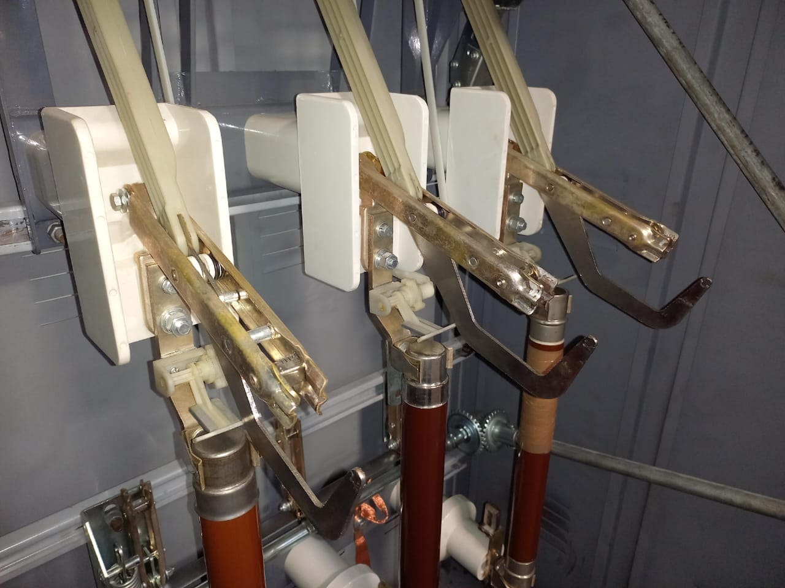
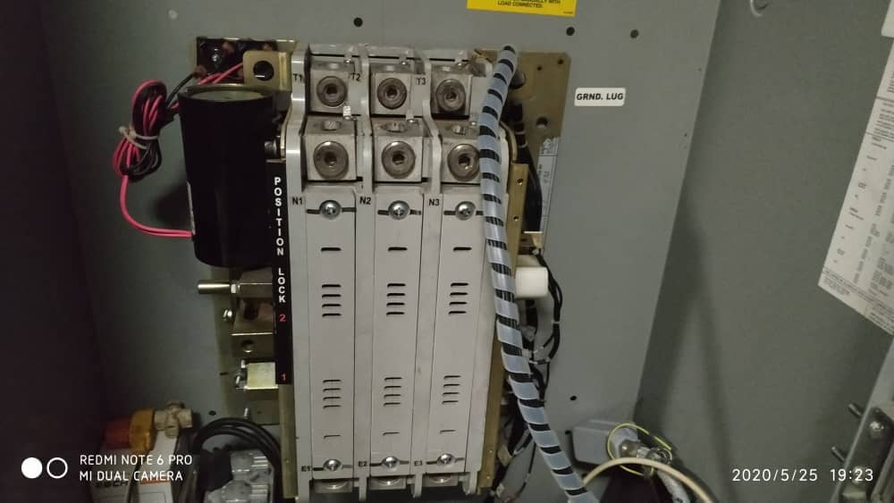

Mantenimiento e Instalación de su Infraestructura Energética
En SELEIM desarrollamos servicios especializados en sistemas eléctricos de media y baja tensión, orientados a garantizar la seguridad, continuidad operativa y eficiencia energética de instalaciones industriales, comerciales e infraestructura crítica.
Contamos con experiencia en construcción, ampliación, mantenimiento y diagnóstico de redes eléctricas, incluyendo tendidos aéreos y subterráneos, sistemas de distribución en 13,8 kV, subestaciones, transformadores, tableros de potencia y sistemas de protección asociados.
Soluciones eléctricas integrales
Diseñamos, instalamos y mantenemos sistemas eléctricos orientados a maximizar la confiabilidad de la infraestructura y minimizar riesgos operativos.
Servicios Especializados
- Tendido de líneas eléctricas en media tensión 13,8 kV.
- Instalación y mantenimiento de redes de distribución eléctrica.
- Instalación de transformadores de distribución y potencia.
- Montaje de subestaciones eléctricas.
- Instalación de cableado eléctrico aéreo y subterráneo.
- Montaje de bandejas, canalizaciones y ducterías eléctricas.
- Instalación de tableros de potencia y distribución.
- Diagnóstico y corrección de fallas en circuitos eléctricos.

Sistemas de Potencia y Protección Eléctrica
Ejecutamos la instalación, mantenimiento y sustitución de disyuntores, interruptores de potencia, celdas de media tensión, sistemas de protección, arrancadores y equipos de maniobra utilizados en sistemas eléctricos industriales.
Nuestro equipo realiza inspecciones técnicas, pruebas funcionales y análisis de fallas orientados a garantizar la correcta operación de los sistemas de protección y distribución eléctrica.

Controles Eléctricos y Transferencias Automáticas
Diseñamos, instalamos y mantenemos sistemas de control eléctrico para aplicaciones industriales, incluyendo tableros de control, sistemas de transferencia automática (ATS), arranque de motores y secuencias de operación para equipos críticos.
Integramos sistemas de respaldo energético, grupos electrógenos y equipos de distribución para garantizar la continuidad del suministro eléctrico en condiciones operativas exigentes.

Corrección del Factor de Potencia y Calidad de Energía
Implementamos soluciones destinadas a mejorar la eficiencia energética de las instalaciones mediante la instalación y mantenimiento de bancos de condensadores, sistemas de compensación reactiva y análisis de calidad de energía.
Estas soluciones permiten reducir penalizaciones por bajo factor de potencia, optimizar el desempeño de los equipos eléctricos y mejorar la estabilidad general de la red.

¿Por qué elegir SELEIM?
Seguridad Operativa
Ejecución de trabajos bajo procedimientos orientados a la protección de personas, equipos e instalaciones.
Experiencia en Media Tensión
Experiencia en sistemas de distribución, subestaciones y redes de 13,8 kV para aplicaciones industriales.
Documentación Técnica
Informes técnicos, levantamientos eléctricos y recomendaciones para la gestión de activos.
Eficiencia Energética
Soluciones orientadas a optimizar el consumo energético y mejorar la confiabilidad de la instalación.
Solicite una evaluación técnica
Nuestro equipo está preparado para asistirle en proyectos de media y baja tensión, distribución eléctrica, protección, control y eficiencia energética.
Solicitar inspección